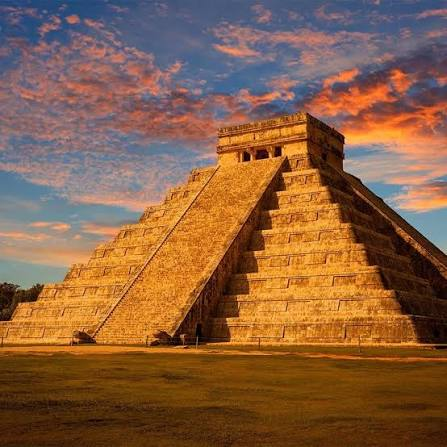

Quesadilla's
Quesadilla's zijn gevulde tortilla's met kaas en eventueel vlees of groenten. Ze worden gebakken tot de kaas gesmolten is.
| Onderwerp | Informatie |
|---|---|
| Hoofdstad | Mexico-Stad |
| Taal | Spaans |
| Valuta | Mexicaanse peso |
| Continent | Noord-Amerika |
| Klimaat | Verschillend per regio |
| Reisduur | Ongeveer 12 uur |
Chichén Itzá is een beroemde Maya-stad met indrukwekkende piramides en oude tempels.

Quesadilla's zijn gevulde tortilla's met kaas en eventueel vlees of groenten. Ze worden gebakken tot de kaas gesmolten is.